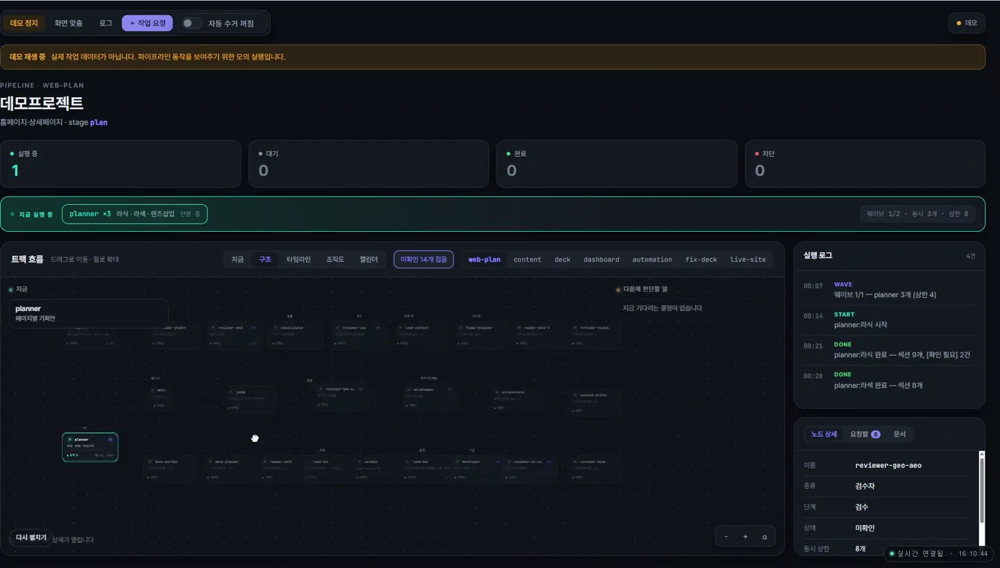

누락은 누락으로 남깁니다.
수집 실패·미설정·측정 불가를 구분하고, 빈 값을 정상 수치로 대체하지 않습니다.
AI AUTOMATION · WORKFLOW
역할별 Agent와 사람의 검수를 연결하는 업무 흐름

AI AGENT AUTOMATION
반복 확인하던 데이터 집계와 보고를 역할별 작업으로 나눴습니다. 아래 영상에서 실행 상태와 검수 흐름을 확인할 수 있습니다.
역할별 상태, 실행 타임라인, 검수·차단, 조직도를 확인하는 화면입니다. 영상 속 진행 수치와 로그는 데모 데이터입니다.
실행 중·대기·완료·차단 상태와 역할별 작업 흐름을 함께 확인합니다.
수집 실패·미설정·측정 불가를 구분하고, 빈 값을 정상 수치로 대체하지 않습니다.
역할별 검토와 필수 검수 기록을 분리해, 근거 없는 완료 판정을 막는 흐름을 설계했습니다.
보류 상태를 알림으로 확인하고, 사람이 검토할 수 있는 읽기 전용 콘솔을 구성했습니다.
실행 화면과 처리 구조를 제시합니다. 시간 절감률이나 매출 효과는 별도로 측정하지 않아 성과 수치로 제시하지 않습니다.